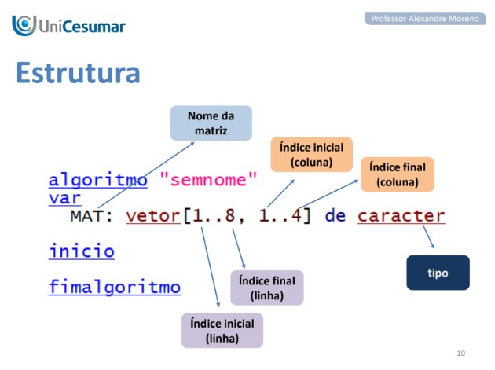
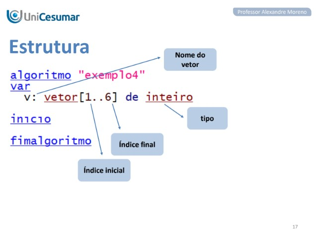

Minha Matéria Favorita
Algoritmo e Lógica de Programação
Matriz
Neste conteúdo eu compreendi que uma Matriz é um conjunto de vetores do mesmo tipo e tamanho.
Principais pontos da aula:
- Estrutura: São conjuntos de vetores de mesmo tamanho e tipo, organizados em linhas e colunas.
- Objetivo: Permitir o agrupamento de várias informações em uma mesma variável, indexada por duas ou mais dimensões.
- Acesso e Controle: Por serem indexadas, exigem duas variáveis inteiras para controlar os índices (posição de linha e coluna).
- Manipulação: O acesso total à tabela ocorre através de laços de repetição aninhados (um laço para as linhas e outro para as colunas).
- Benefícios: Facilitam o armazenamento de dados, otimizam o código e oferecem acesso indexado rápido.
- Conceito: É uma variável que contém um conjunto de dados identificado por um endereço único chamado de índice.
- Nomenclatura: Também é conhecido pelos termos array, matriz unidimensional, tabela ou variável indexada.
- Objetivo: Permite agrupar diversas informações do mesmo tipo em uma única variável.
- Componentes: Sua estrutura é composta por um nome, índices inicial e final, tipo de dado e uma variável de controle para o índice.
- Acesso: Para referenciar um elemento, deve-se sempre utilizar o nome do vetor acompanhado de seu índice entre colchetes, como em
v[i][. - Vantagens: Oferece benefícios como maior capacidade de armazenamento, facilidade para classificar dados e otimização do código-fonte.

Vetor

Aulas ministrada pelo Professor Alexandre Moreno.
Alexandre Moreno
Professormoreno